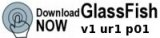

La communauté GlassFish met en œuvre un logiciel professionnel open source, de qualité en matière de production, et libre. Les principales prestations livrables sont un serveur d'application, l'implémentation de référence Java EE 5, et l'implémentation de référence Java Persistence API, TopLink Essentials. La communauté propose également un référentiel Maven, des outils, et bien d'autres éléments.

|

|

|

|
| Démarrer | Télécharger | Communiquer | Participer |
Projet SailFin et technologie de servlets SIP Open Source pour GlassFish
Le protocole SIP (Session Initiation Protocol) se cache derrière de nombreux services dont nous jouissons aujourd'hui, tels que le service de téléphonie Voice-over-IP (VoIP), la messagerie instantanée, la gestion des listes de contacts et de présences ainsi que les conférences en ligne. Le projet SailFin intègre la technologie de servlet SIP au serveur d'application GlassFish. Visitez le site https://sailfin.dev.java.net pour obtenir plus d'informations.
|  |